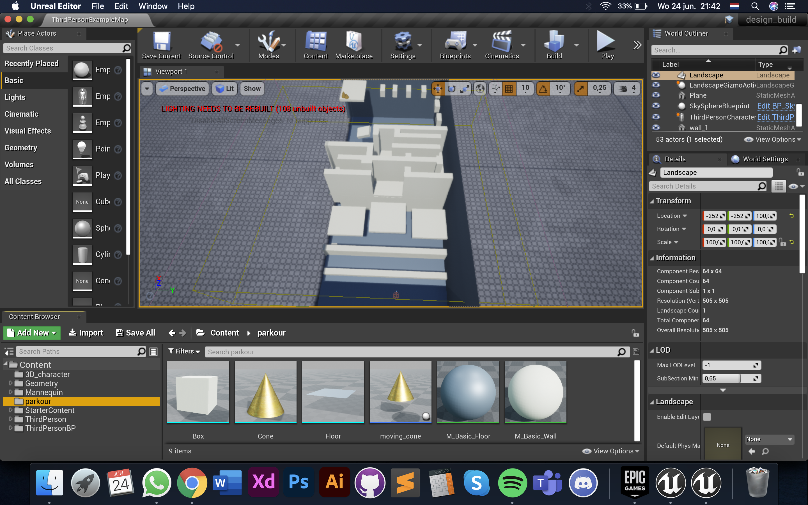

AR & VR
CHALLENGE
DESIGN & BUILD
Het Design & Build gedeelte van de AR & VR challenge.
Proces
Voor het Design & Build gedeelte van de challenge AR & VR heb ik een parkour gemaakt. Ik ben verder gegaan met het idee van tinkering 1. De opdracht was: “Create a novel interactive experience using VR and/or AR technology". Een parkour is erg interactief en wilde niet iets doen waarbij de gebruiker iets moet neerschieten, sinds de meeste bekende spellen op dit moment daarom draaien. De gebruiker moet van punt A naar punt B gaan, maar om daarnaartoe te gaan zitten enkele obstakels in de weg. Meer te zien in de showcase video.
Showcase video
Bekijk de video door op deze tekst te klikken
Het kan zijn dat het geluid zacht is (in het geval dat niks te horen is en afvraagd wordt of er geluid bij zit).